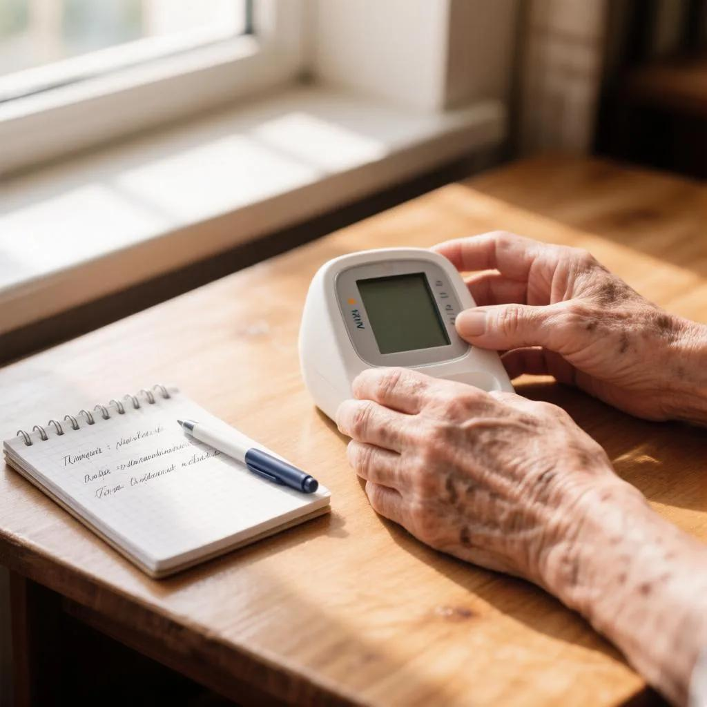

← На главную ЗдоровьеНавигатора

🩺 Давление после 60: почему старые нормы «140/90» больше не работают
📅 Октябрь 2026 · ⏱ 5 минут чтения
С возрастом сосуды теряют эластичность, и давление закономерно растет. Раньше врачи говорили: «Для пожилого человека 150/90 — это норма». Современные кардиологи с этим не согласны. Ориентироваться только на паспортный возраст и разовые замеры тонометра — опасно.
Почему нельзя слепо верить цифрам?
- Эффект «белого халата» и скрытая угроза. В поликлинике давление может скакать от стресса, а дома быть в норме. И наоборот: вы чувствуете себя хорошо, но ночью давление критически растет. Разовый замер не дает полной картины.
- Опасность «идеальных» 120/80. Попытка снизить давление пожилого человека до молодежных стандартов часто приводит к ортостатической гипотензии. Резко встали с кровати — закружилась голова, упали, перелом шейки бедра. Сосуды просто не успевают адаптироваться.
- Верхнее высокое, нижнее низкое. После 60 лет часто встречается изолированная систолическая гипертензия (например, 160/70). Агрессивный прием таблеток может обрушить нижнее давление, ухудшив питание сердца и почек.
- Цифры — не главное. Одинаковые 140/90 у двух пациентов требуют разного лечения. Если у одного чистые сосуды, а у второго диабет и лишний вес — риски совершенно разные.
Новые безопасные ориентиры (согласно современным протоколам)
- Для возраста 65–80 лет: Целевой диапазон 130–139 мм рт. ст. (если хорошо переносите терапию).
- Красная линия: Верхнее давление не должно опускаться ниже 120 мм рт. ст.
- После 80 лет: Индивидуальный подход. При слабости или риске падений врачи выбирают максимально мягкую терапию.
Как контролировать давление правильно?
- Правило покоя. Измеряйте давление только после 5 минут сидения в тишине. Не скрещивайте ноги, не разговаривайте.
- Дневник давления (правило 7 дней). Не верьте одному утреннему замеру. Ведите журнал: утром и вечером в течение недели. Только среднее значение покажет реальную картину.
- Следите за органами-мишенями. Давление бьет по почкам и глазам. Регулярно сдавайте креатинин (СКФ) и проверяйте глазное дно.
⚠️ Важно!
Если на фоне приема таблеток при вставании кружится голова или появляется «туман» — немедленно идите к врачу. Это признак передозировки, а не «нормальная адаптация».
📊 Узнайте свой реальный риск
Хотите точно рассчитать свои риски и понять, в какой зоне находится ваше давление относительно нормы ВОЗ?
Открыть калькулятор рисков →
💊 Контроль давления начинается с качественных препаратов
Современные средства для нормализации АД, витамины для сосудов и тонометры с доставкой на дом. Проверенное качество и выгодные цены.
Перейти в аптеку 36.6 →
Реклама. ООО "АПТЕКА 36,6", ИНН 7704219370. erid: [ВСТАВИТЬ ТВОЙ ERID]